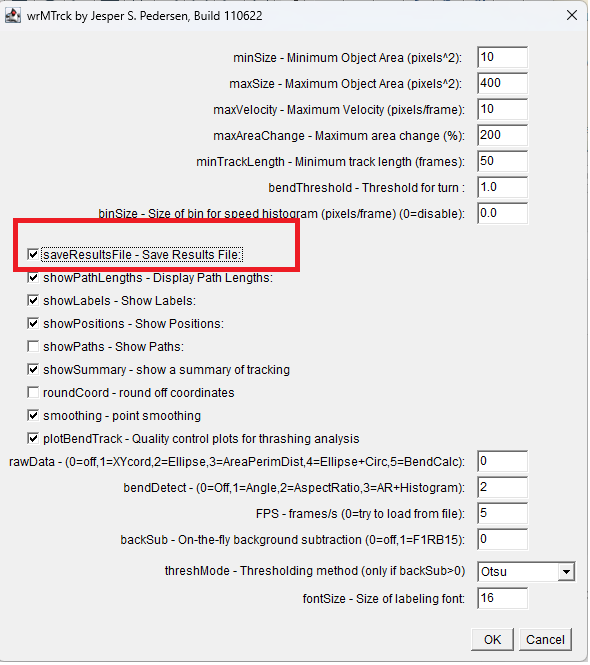

Image Data Analysis for Group Project
Extra help to work reproducibly
Worm Tracking
The following ImageJ workflow uses the processing steps you used in workshop 3 with one change. That change is to save the results to file rather than having the results window pop up and saving from there. Or maybe two changes: it also tells you to use meaning systematic file names that will be easy to process when importing data. The RStudio workflow shows you how to import multiple files into one dataframe with columns indicating the treatment.
ImageJ
Save files with systematic names: ev_0.avi 343_0.avi ev_1.avi 343_1.avi ev_2.5.avi 343_2.5.avi
Open ImageJ
Open video file eg ev_2.5.avi
- Convert to 8-bit: Image | Type | 8-bit
- Crop to petri dish: Select then Image | Crop
- Calculate average pixel intensity: Image | Stacks | Z Project
- Projection type: Average Intensity to create
AVG_ev_2.5.avi
- Projection type: Average Intensity to create
- Subtract average from image: Process | Image Calculator
- Image 1:
ev_2.5.avi - Operation: Subtract
- Image 2:
AVG_ev_2.5.avi - Create new window: checked
- OK, Yes to Process all
- Image 1:
- Invert: Edit | Invert
- Adjust threshold: Image | Adjust | Threshold
- Method: Default
- Thresholding: Default, B&W
- Dark background: checked
- Auto or adjust a little but make sure the larvae do not disappear at later points in the video (use the slider)
- Apply
- Invert: Edit | Invert
- Track: Plugins | wrMTrck
Set minSize: 10
Set maxSize: 400
Set maxVelocity: 10
Set maxAreaChange: 200
Set bendThreshold: 1
-
Important: check Save Results File This is different to what you did in the workshop. It will help because the results will be saved automatically rather than to saving from the Results window that other pops up. Consequently, you will be able to save the results files with systematic names relating to their treatments and then read them into R simultaneously. That will also allow you to add information from the name of the file (which has the treatment information) to the resulting dataframes

wrMTrck window with the settings listed above shown Click OK. Save to a folder for all the tracking data files. I recommend deleting the “Results of..” part of the name
- Check that the Summary window indicates 3 tracks and that the 3 larvae are what is tracked by using the slider on the Result image
- Repeat for all videos
RStudio
This is the code you need to import multiple csv files into a single dataframe and add a column with the treatment information from the file name. This is why systematic file names are good.
It assumes
- your files are called type_concentration.txt for example: ev_0.txt 343_0.txt ev_1.txt 343_1.txt ev_2.5.txt 343_2.5.txt.
- the .txt datafile are in a folder called
trackinside your working directory - you have installed the following packages:
tidyverse,janitor
🎬 Load the tidyverse
🎬 Put the file names into a vector we will iterate through
# get a vector of the file names
files <- list.files(path = "track", full.names = TRUE )We can use map_df() from the purrr package which is one of the tidyverse gems loaded with tidyvserse. map_df() will iterate through files and read them into a dataframe with a specified import function. We are using read_table(). map_df() keeps track of the file by adding an index column called file to the resulting dataframe. Instead of this being a number (1 - 6 here) we can use set_names() to use the file names instead. The clean_names() function from the janitor package will clean up the column names (make them lower case, replace spaces with _ remove special characters etc)
🎬 Import multiple csv files into one dataframe called tracking
You will get a warning Duplicated column names deduplicated: 'avgX' => 'avgX_1' [15] for each of the files because the csv files each have two columns called avgX. If you click on the tracking dataframe you see is contains the data from all the files.
Now we can add columns for the type and the concentration by processing the values in the file. The values are like track/343_0.txt so we need to remove .txt and track/ and separate the remaining words into two columns.
🎬 Process the file column to add columns for the type and the concentration
# extract type and concentration from file name
# and put them into additopnal separate columns
tracking <- tracking |>
mutate(file = str_remove(file, ".txt")) |>
mutate(file = str_remove(file, "track/")) |>
extract(file, remove =
FALSE,
into = c("type", "conc"),
regex = "([^_]{2,3})_(.+)") [^_]{2,3} matches two or three characters that are not _ at the start of the string (^)
.+ matches one or more characters. The extract() function puts the first match into the first column, type, and the second match into the second column, conc. The remove = FALSE argument means the original column is kept.
You now have a dataframe with all the tracking data which is relatively easy to summarise and plot using tools you know.
There is an example RStudio project containing this code here: tips. You can also download the project as a zip file from there but there is some code that will do that automatically for you. Since this is an RStudio Project, do not run the code from inside a project. You may want to navigate to a particular directory or edit the destdir:
usethis::use_course(url = "3mmaRand/tips", destdir = ".")You can agree to deleting the zip. You should find RStudio restarts and you have a new project called tips-xxxxxx. The xxxxxx is a commit reference - you do not need to worry about that, it is just a way to tell you which version of the repo you downloaded. You can now run the code in the project.